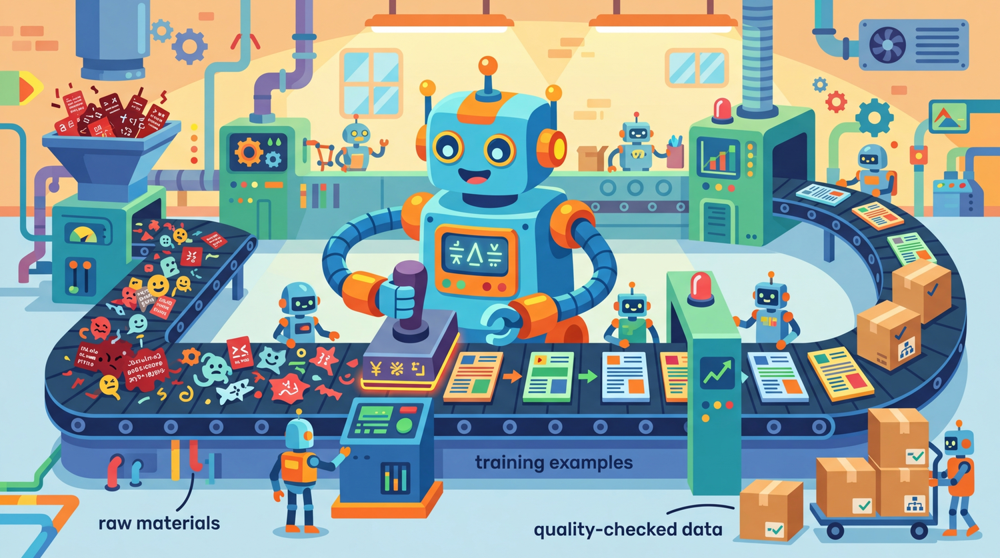

"Give a model a dataset and it learns for a day. Teach a model to generate its own dataset and, well, you get Alpaca."
Synth AI Agent

Prerequisites
Before starting, make sure you are familiar with synthetic data basics as covered in Section 13.1: Principles of Synthetic Data Generation.
From manual curation to automated factories. The most successful open-source models (Llama, Phi, Mistral) were trained on datasets built by sophisticated generation pipelines, not by armies of human annotators. These pipelines use LLMs themselves as data generators, applying techniques like Self-Instruct (generate instructions from a seed set), Evol-Instruct (progressively evolve instructions to increase complexity), and persona-driven generation (simulate diverse expert perspectives). Building on the foundational concepts from Section 13.1, this section teaches you to build these pipelines from scratch.
1. Self-Instruct: Bootstrapping from Seeds Intermediate
Stanford's Alpaca model was fine-tuned on 52,000 instruction-response pairs, and not a single one was written by a human annotator. The entire dataset was generated by GPT-3.5 from just 175 seed examples in a matter of hours, at a total cost of under $500. That result, which produced a model competitive with commercial offerings, demonstrated that a well-designed generation pipeline can replace months of human annotation work.
By the end of this section, you will be able to build three types of data generation pipelines: Self-Instruct (bootstrap from seeds), Evol-Instruct (evolve instructions to increase complexity), and persona-driven generation (simulate diverse expert perspectives). We start with Self-Instruct, the foundational technique that launched the open-source instruction-tuning movement.
Self-Instruct, introduced by Wang et al. (2023), starts with a small set of human-written seed instructions (typically 100 to 200) and uses an LLM to generate new instructions, classify them, and produce responses. The key innovation is that the LLM generates both the task description and the solution, creating complete training examples with minimal human involvement.
Think of Self-Instruct as a sourdough starter for training data. You begin with a small batch of seed instructions (the starter culture), and the LLM generates new instructions from those seeds, which then breed further instructions. Each generation builds on the previous one, growing the dataset exponentially from a handful of examples. Like real sourdough, quality depends on the health of the starter: poor seed examples produce bland, repetitive outputs, while diverse, high-quality seeds yield a rich dataset.
1.1 The Self-Instruct Pipeline
Figure 13.2.1 traces the Self-Instruct pipeline from seed examples through generation, classification, filtering, and iteration. Code Fragment 13.2.1 shows this approach in practice.
The following implementation (Code Fragment 13.2.2) shows this approach in practice.
Code Fragment 13.2.1 demonstrates the Batch API workflow.
# Generate diverse instructions using the Self-Instruct pipeline
# Seed tasks bootstrap generation; the LLM expands the instruction set
import json
import random
from openai import OpenAI
client = OpenAI()
# Seed instructions (in practice, use 150-200 diverse examples)
SEED_INSTRUCTIONS = [
"Write a Python function that reverses a linked list.",
"Explain the difference between TCP and UDP protocols.",
"Summarize the key principles of object-oriented programming.",
"Convert the following CSV data into a JSON format.",
"What are the pros and cons of microservices architecture?"
]
def self_instruct_generate(
seed_pool: list[str],
num_examples: int = 8,
model: str = "gpt-4o"
) -> dict:
"""Generate a new instruction-response pair using Self-Instruct."""
# Step 1: Sample from the seed pool
sampled = random.sample(seed_pool, min(num_examples, len(seed_pool)))
examples_text = "\n".join(f"{i+1}. {inst}" for i, inst in enumerate(sampled))
# Step 2: Generate a new instruction
gen_prompt = f"""Here are {len(sampled)} example task instructions:
{examples_text}
Generate a completely NEW and DIFFERENT task instruction that:
- Is distinct from all the examples above
- Is specific and actionable
- Can be answered in a single response
- Covers a different topic or skill
New instruction:"""
gen_response = client.chat.completions.create(
model=model,
messages=[{"role": "user", "content": gen_prompt}],
temperature=1.0,
max_tokens=200
)
new_instruction = gen_response.choices[0].message.content.strip()
# Step 3: Generate the response
resp_response = client.chat.completions.create(
model=model,
messages=[
{"role": "system", "content": "Provide a thorough, accurate, "
"and well-structured response to the following instruction."},
{"role": "user", "content": new_instruction}
],
temperature=0.7,
max_tokens=1024
)
response_text = resp_response.choices[0].message.content.strip()
return {
"instruction": new_instruction,
"response": response_text,
"source": "self-instruct",
"seed_count": len(sampled)
}
# Generate a batch
pool = SEED_INSTRUCTIONS.copy()
generated = []
for i in range(3):
pair = self_instruct_generate(pool)
generated.append(pair)
pool.append(pair["instruction"]) # Add back to pool
print(f"Generated {i+1}: {pair['instruction'][:60]}...")
The following snippet in Code Fragment 13.2.2 demonstrates the implementation.
# Define the generate_conversation function
# This handles the core processing logic
def generate_conversation(
topic: str,
persona: str,
num_turns: int = 4,
model: str = "gpt-4o"
) -> list[dict]:
"""Generate a multi-turn conversation with natural follow-ups."""
system_msg = f"""You are simulating a realistic conversation between a
user and an AI assistant. The user has the following persona: {persona}
Topic: {topic}
Generate a natural {num_turns}-turn conversation where:
- Each user message builds on the previous assistant response
- The user asks increasingly specific follow-up questions
- The assistant provides detailed, helpful responses
- The conversation feels natural, not scripted
Format each turn as:
USER: [message]
ASSISTANT: [response]"""
# Send chat completion request to the API
response = client.chat.completions.create(
model=model,
messages=[{"role": "user", "content": system_msg}],
temperature=0.85,
max_tokens=2048
)
# Parse turns from the generated conversation
text = response.choices[0].message.content
turns = []
current_role = None
current_text = []
for line in text.split("\n"):
if line.startswith("USER:"):
if current_role:
turns.append({"role": current_role,
"content": "\n".join(current_text).strip()})
current_role = "user"
current_text = [line.replace("USER:", "").strip()]
elif line.startswith("ASSISTANT:"):
if current_role:
turns.append({"role": current_role,
"content": "\n".join(current_text).strip()})
current_role = "assistant"
current_text = [line.replace("ASSISTANT:", "").strip()]
else:
current_text.append(line)
if current_role:
turns.append({"role": current_role,
"content": "\n".join(current_text).strip()})
return turns
# Generate diverse conversations
conversations = [
generate_conversation(
"optimizing PostgreSQL queries",
"junior backend developer with 1 year experience"
),
generate_conversation(
"building a recommendation system",
"data scientist transitioning from academia to industry"
),
]
for i, conv in enumerate(conversations):
print(f"Conversation {i+1}: {len(conv)} turns")
for turn in conv[:2]:
print(f" {turn['role']}: {turn['content'][:60]}...")
Why Evol-Instruct produces better training data than naive scaling. Simply generating more examples at the same difficulty level yields diminishing returns quickly: you saturate the easy patterns, and the model stops learning. Evol-Instruct sidesteps this by systematically increasing complexity (add constraints, require multi-step reasoning, introduce ambiguity). This mirrors the curriculum learning principle from human education: learners improve fastest when training examples are just beyond their current ability. The practical implication is that 10,000 progressively evolved examples often outperform 100,000 flat-difficulty examples for SFT training.
2. Persona-Driven Generation Intermediate
One of the most effective techniques for increasing diversity in synthetic data is persona-driven generation. Instead of generating all data with the same system prompt, you create a library of diverse personas that simulate different users, expertise levels, communication styles, and backgrounds. Each persona produces instructions and conversations that reflect its unique perspective. Code Fragment 13.2.3 shows this approach in practice.
# Implement Evol-Instruct to evolve simple instructions into complex ones
# Successive transformations add constraints, reasoning steps, and edge cases
import itertools
PERSONA_DIMENSIONS = {
"expertise": ["beginner", "intermediate", "senior", "expert"],
"role": [
"software engineer", "data scientist", "product manager",
"student", "researcher", "DevOps engineer"
],
"communication_style": [
"concise and direct",
"detailed and thorough",
"casual and conversational",
"formal and precise"
],
"context": [
"working on a startup MVP",
"maintaining a legacy enterprise system",
"preparing for a technical interview",
"writing a research paper",
"building a side project"
]
}
def build_persona(dimensions: dict) -> str:
"""Construct a persona description from dimension choices."""
return (
f"A {dimensions['expertise']}-level {dimensions['role']} who "
f"communicates in a {dimensions['communication_style']} manner. "
f"Currently {dimensions['context']}."
)
def generate_with_persona(persona: str, topic: str) -> dict:
"""Generate an instruction from a specific persona's perspective."""
prompt = f"""You are role-playing as the following persona:
{persona}
Given this persona, write a realistic question or task instruction
that this person would actually ask about: {topic}
The question should reflect the persona's expertise level,
communication style, and current context. Be authentic.
Question:"""
# Send chat completion request to the API
response = client.chat.completions.create(
model="gpt-4o",
messages=[{"role": "user", "content": prompt}],
temperature=0.9,
max_tokens=200
)
return {
"persona": persona,
"topic": topic,
# Extract the generated message from the API response
"instruction": response.choices[0].message.content.strip()
}
# Generate diverse data by sampling persona combinations
def sample_personas(n: int = 10) -> list[dict]:
"""Sample n diverse persona combinations."""
personas = []
for _ in range(n):
dims = {
key: random.choice(values)
for key, values in PERSONA_DIMENSIONS.items()
}
personas.append(dims)
return personas
persona_samples = sample_personas(5)
for dims in persona_samples:
persona = build_persona(dims)
result = generate_with_persona(persona, "database indexing")
print(f"Persona: {persona[:60]}...")
print(f" Q: {result['instruction'][:70]}...")
print()
With 4 expertise levels, 6 roles, 4 communication styles, and 5 contexts, the persona space contains 480 unique combinations. Even a modest sample of 50 to 100 persona combinations produces significantly more diverse data than a single-persona approach. Studies on the Orca and Phi datasets showed that persona-driven generation improved downstream model performance by 5% to 15% on diversity-sensitive benchmarks.
3. Domain-Specific Generation Strategies Intermediate
Generic generation pipelines work well for general-purpose instruction data, but domain-specific tasks (medical, legal, financial, scientific) require additional structure. Domain-specific generation uses schema-guided prompting, terminology constraints, and document-grounded generation to produce accurate, specialized data. Code Fragment 13.2.5 shows this in practice.
| Strategy | Approach | Best For |
|---|---|---|
| Schema-Guided | Provide domain ontology/schema as context | Medical coding, legal classification |
| Document-Grounded | Generate QA pairs from domain documents | Technical documentation, research papers |
| Template + Fill | Domain templates with LLM-filled slots | Clinical notes, financial reports |
| Terminology-Constrained | Enforce domain vocabulary usage | Legal contracts, medical records |
| Expert Review Loop | Generate, expert reviews, regenerate | High-stakes domains with low error tolerance |
Code Fragment 13.2.4 demonstrates this approach.
# Define the domain_grounded_generation function
# This handles the core processing logic
def domain_grounded_generation(
document: str,
domain: str,
num_pairs: int = 3,
model: str = "gpt-4o"
) -> list[dict]:
"""Generate QA pairs grounded in a domain document."""
prompt = f"""You are an expert in {domain}. Given the following document,
generate {num_pairs} question-answer pairs that test understanding of the
key concepts. Each question should:
- Be answerable from the document content
- Range from factual recall to analytical reasoning
- Use proper domain terminology
- Be relevant to a practitioner in this field
Document:
{document[:3000]}
Generate exactly {num_pairs} pairs in this format:
Q1: [question]
A1: [detailed answer with references to the document]
Q2: ...
A2: ..."""
# Send chat completion request to the API
response = client.chat.completions.create(
model=model,
messages=[{"role": "user", "content": prompt}],
temperature=0.7,
max_tokens=2048
)
# Parse QA pairs
text = response.choices[0].message.content
pairs = []
lines = text.split("\n")
current_q, current_a = None, None
for line in lines:
if line.startswith("Q") and ":" in line[:4]:
if current_q and current_a:
pairs.append({"question": current_q, "answer": current_a})
current_q = line.split(":", 1)[1].strip()
current_a = None
elif line.startswith("A") and ":" in line[:4]:
current_a = line.split(":", 1)[1].strip()
if current_q and current_a:
pairs.append({"question": current_q, "answer": current_a})
return pairs
# Example: Generate from a technical document
sample_doc = """
PostgreSQL uses a cost-based query optimizer that evaluates multiple
execution plans and selects the one with the lowest estimated cost.
The optimizer considers sequential scan cost, index scan cost, join
strategies (nested loop, hash join, merge join), and statistics
collected by ANALYZE. The work_mem parameter controls how much memory
is available for sort operations before spilling to disk.
"""
pairs = domain_grounded_generation(sample_doc, "database engineering")
for p in pairs:
print(f"Q: {p['question'][:70]}...")
print(f"A: {p['answer'][:70]}...")
print()
4. Preference and Ranking Data Generation Intermediate
Alignment training methods like RLHF and DPO require preference data: pairs of responses where one is preferred over the other. Generating this data synthetically requires careful design to ensure the quality gap between chosen and rejected responses is realistic (not too obvious, not too subtle). Figure 13.2.3 contrasts the two main approaches to synthetic preference data.
Avoid trivially distinguishable pairs. If the rejected response is clearly terrible (e.g., random text or completely off-topic), the model learns an easy shortcut rather than developing nuanced preference understanding. The best preference datasets have subtle quality differences: a response that is mostly correct but misses a key detail, or one that is accurate but poorly organized. The UltraFeedback dataset showed that models trained on subtly contrasting pairs outperformed those trained on obvious quality gaps. For a deeper look at how preference data shapes alignment, see Section 17.2 on DPO and preference optimization.
The cost of generating a million synthetic training examples with an LLM API is often less than the cost of hiring a single human annotator for a week. The quality trade-off is real, but the economics are hard to ignore.
Show Answer
Show Answer
Show Answer
Show Answer
Show Answer
When generating synthetic data, vary your seed prompts across topics, difficulty levels, and formats. If all seeds look similar, the generated dataset will lack diversity and the fine-tuned model will overfit to a narrow distribution.
Key Takeaways
- Self-Instruct bootstraps datasets from small seed sets by using LLMs to generate new instructions, classify them, produce responses, and add survivors back to the pool. This created the Alpaca dataset from just 175 seeds.
- Evol-Instruct progressively increases complexity through five operations (add constraints, deepen, concretize, increase reasoning, complicate input), producing natural difficulty curricula.
- Multi-turn conversation synthesis requires follow-up planners and cross-turn coherence checks to ensure context builds naturally across exchanges.
- Persona-driven generation multiplies diversity by simulating different expertise levels, roles, styles, and contexts. The combinatorial space of personas produces far more varied data than single-prompt approaches.
- Domain-specific pipelines need schema-guided prompting, document grounding, and terminology constraints to produce accurate specialized data.
- Preference data for alignment should have subtle, not obvious, quality differences between chosen and rejected responses to train nuanced preference models.
Who: A developer tools startup building a coding assistant specialized in infrastructure-as-code (Terraform, Ansible, Kubernetes YAML).
Situation: They had 500 high-quality instruction-response pairs written by DevOps engineers, but needed at least 20,000 to fine-tune a model that could handle the breadth of infrastructure automation tasks.
Problem: DevOps engineers cost $150/hour and could produce only 10 to 15 quality examples per hour. Scaling to 20,000 examples would cost $200,000 or more and take months.
Dilemma: They could use Self-Instruct (simpler but tends to produce repetitive outputs in narrow domains), Evol-Instruct (more diverse but requires careful tuning of evolution operators), or a combination of both with domain-specific constraints.
Decision: They implemented Evol-Instruct with five custom evolution operators tailored to infrastructure code: add resource dependencies, increase multi-cloud complexity, introduce error handling requirements, add security constraints, and combine multiple tools in one task.
How: Starting from the 500 seed examples, they ran 4 evolution rounds, each producing 3 variants per surviving example. A domain-specific validator checked that generated Terraform/Ansible code was syntactically valid (using terraform validate and ansible-lint). Invalid examples were discarded, and a deduplication pass removed near-duplicates using code AST similarity.
Result: After 4 rounds, they produced 28,000 candidate pairs, of which 22,000 passed validation and deduplication. The fine-tuned model achieved 78% pass@1 on a held-out test set of 200 infrastructure tasks, compared to 45% for the base model and 82% for GPT-4. Generation cost was $3,200 in API fees.
Lesson: Evol-Instruct is most effective when evolution operators are domain-specific rather than generic; combining LLM-based evolution with deterministic validators (linters, parsers) ensures generated data is both diverse and syntactically correct.
Hands-On Lab: Build a Self-Instruct Data Generation Pipeline
Objective
Build a working Self-Instruct pipeline that generates diverse instruction/response pairs from a small set of seed examples, filters low-quality outputs, and produces a JSONL training dataset.
What You'll Practice
- Designing seed instruction sets for domain coverage
- Prompting an LLM to generate new instructions via in-context examples
- Implementing ROUGE-based deduplication to remove near-duplicates
- Building a quality filter that rejects malformed or trivial outputs
- Saving the final dataset in ChatML JSONL format
Setup
The following cell installs the required packages and configures the environment for this lab.
pip install openai rouge-score pandas tqdmYou will need an OpenAI API key (or any OpenAI-compatible endpoint). Set it as an environment variable: export OPENAI_API_KEY="sk-..."
Steps
Step 1: Define your seed instructions
Create a list of 10 diverse seed instructions covering different task types. Good seeds span categories such as classification, summarization, creative writing, extraction, and reasoning. Each seed should be a dictionary with three fields:
"instruction": The task description (e.g., "Classify the sentiment of the following product review as positive, negative, or neutral.")"input": The input data for the task (e.g., a product review, a paragraph to summarize, or a code snippet to debug)"output": A high-quality reference response demonstrating the expected format and depth
Include at least one seed from each category: classification, summarization, code generation, question answering, rewriting/editing, math/reasoning, extraction, and creative writing. This diversity ensures the Self-Instruct pipeline generates instructions across the full task spectrum.
Hint
Aim for diversity in both task type and format. For example, include a code debugging task ("Find the bug in this Python function..."), a data extraction task ("Extract all dates from the following text..."), and a creative task ("Write a haiku about..."). Each seed should have a clear instruction, optional input, and a high-quality output.
Step 2: Build the instruction generator
Write a function that samples random seeds from the pool and prompts the LLM to generate a new, different instruction. This is the core of Self-Instruct.
import random
from openai import OpenAI
client = OpenAI()
def generate_new_instruction(seed_pool, n_examples=3):
sampled = random.sample(seed_pool, min(n_examples, len(seed_pool)))
examples_text = ""
for i, ex in enumerate(sampled, 1):
examples_text += f"Example {i}:\n"
examples_text += f"Instruction: {ex['instruction']}\n"
if ex.get('input'):
examples_text += f"Input: {ex['input']}\n"
examples_text += f"Output: {ex['output']}\n\n"
prompt = f"Here are some example tasks:\n\n{examples_text}\n"
prompt += "Now generate a completely NEW and DIFFERENT task.\n"
prompt += "Return in this format:\nInstruction: [...]\nInput: [...]\nOutput: [...]"
# TODO: Call the LLM API with this prompt and parse the response
# into a dictionary with keys: instruction, input, output
# Use temperature=0.9 to encourage diversity
response = client.chat.completions.create(
model="gpt-4o-mini",
messages=[{"role": "user", "content": prompt}],
temperature=0.9,
max_tokens=500
)
# TODO: Parse response.choices[0].message.content into dict
pass
# Test it
new_example = generate_new_instruction(seed_instructions)
print(new_example)
Hint
Parse the response by splitting on "Instruction:", "Input:", and "Output:" markers using regular expressions. Handle the case where "Input:" contains "None" by setting it to an empty string.
Step 3: Implement ROUGE-based deduplication
After generating new instructions, check each one against the existing pool using ROUGE-L score to filter near-duplicates.
from rouge_score import rouge_scorer
scorer = rouge_scorer.RougeScorer(['rougeL'], use_stemmer=True)
def is_duplicate(new_instruction, existing_instructions, threshold=0.7):
"""Return True if new_instruction is too similar to any existing one."""
# TODO: Compare the new instruction text against every existing
# instruction using ROUGE-L. If any score exceeds the threshold,
# consider it a duplicate.
for existing in existing_instructions:
score = scorer.score(existing, new_instruction)['rougeL'].fmeasure
if score > threshold:
return True
return False
# Test with an obvious duplicate
test_dup = "Classify the sentiment of this product review as positive, negative, or neutral."
print(f"Is duplicate: {is_duplicate(test_dup, [s['instruction'] for s in seed_instructions])}")
Hint
A threshold of 0.7 is a reasonable starting point. Lower it to 0.5 if you want more aggressive filtering. Higher values (0.8+) will only catch near-exact matches.
Step 4: Build the generation loop
Run the Self-Instruct loop for multiple iterations, generating new instructions, filtering duplicates, and growing the pool.
from tqdm import tqdm
def run_self_instruct(seeds, target_count=50, max_attempts=100):
pool = list(seeds)
all_instructions = [s['instruction'] for s in pool]
attempts, duplicates_filtered = 0, 0
pbar = tqdm(total=target_count, initial=len(pool), desc="Generating")
while len(pool) < target_count and attempts < max_attempts:
attempts += 1
try:
new_example = generate_new_instruction(pool)
if is_duplicate(new_example['instruction'], all_instructions):
duplicates_filtered += 1
continue
pool.append(new_example)
all_instructions.append(new_example['instruction'])
pbar.update(1)
except Exception as e:
print(f"Error on attempt {attempts}: {e}")
pbar.close()
print(f"\nGenerated {len(pool)} examples ({duplicates_filtered} duplicates filtered)")
return pool
dataset = run_self_instruct(seed_instructions, target_count=30, max_attempts=60)
Hint
If you are hitting rate limits, add a small delay between API calls with time.sleep(0.5). Expect 15 to 30% of generated examples to be filtered as duplicates.
Step 5: Apply quality filters and export
Filter out low-quality examples and save the final dataset in ChatML JSONL format.
import json
def quality_filter(example):
instruction = example.get('instruction', '')
output = example.get('output', '')
if len(instruction) < 10 or len(output) < 20:
return False
if output.lower().startswith(("i cannot", "i'm sorry", "as an ai")):
return False
return True
filtered = [ex for ex in dataset if quality_filter(ex)]
print(f"After filter: {len(filtered)}/{len(dataset)} examples retained")
# Convert to ChatML and save
def to_chatml(example):
user_content = example['instruction']
if example.get('input') and example['input'] != 'None':
user_content += f"\n\n{example['input']}"
return {"messages": [
{"role": "system", "content": "You are a helpful assistant."},
{"role": "user", "content": user_content},
{"role": "assistant", "content": example['output']}
]}
with open("synthetic_dataset.jsonl", 'w') as f:
for ex in filtered:
f.write(json.dumps(to_chatml(ex)) + "\n")
print(f"Saved {len(filtered)} examples to synthetic_dataset.jsonl")
Hint
Open the file in write mode, loop over filtered examples, convert each with to_chatml(), and write one JSON object per line.
Expected Output
- A JSONL file containing 20 to 40 instruction/response pairs in ChatML format
- Console output showing generation progress, 15 to 30% duplicate filtering rate, and quality filter retention
- Diverse task types in the generated data, not just variations of your seeds
Stretch Goals
- Add an Evol-Instruct step that takes generated instructions and creates harder variants (add constraints, increase complexity, require multi-step reasoning)
- Implement an LLM-as-judge quality scorer that rates each example 1 to 5 and filters below 3
- Generate preference pairs by producing two responses per instruction and ranking them with the LLM
Complete Solution
import json, random, re, time
from openai import OpenAI
from rouge_score import rouge_scorer
from tqdm import tqdm
client = OpenAI()
scorer = rouge_scorer.RougeScorer(['rougeL'], use_stemmer=True)
seed_instructions = [
{"instruction": "Classify the sentiment of the following product review.", "input": "The battery life is amazing but the screen is too dim.", "output": "Mixed/Neutral. Praises battery, criticizes screen."},
{"instruction": "Summarize the paragraph in one sentence.", "input": "ML models require large data. Without it, they overfit. Augmentation helps.", "output": "ML models need large datasets; augmentation helps prevent overfitting."},
{"instruction": "Write a Python function to check if a string is a palindrome.", "input": "", "output": "def is_palindrome(s):\n s = s.lower().replace(' ', '')\n return s == s[::-1]"},
{"instruction": "What is the capital of France?", "input": "", "output": "The capital of France is Paris."},
{"instruction": "Rewrite this sentence to be more concise.", "input": "In the event that the weather is not favorable, we will move indoors.", "output": "If the weather is bad, we will move indoors."},
{"instruction": "Calculate compound interest on $1000 at 5% for 3 years.", "input": "", "output": "A = 1000 * (1.05)^3 = $1,157.63. Interest earned: $157.63."},
{"instruction": "Extract all email addresses from the text.", "input": "Contact support@example.com or sales@co.org. CEO: john@startup.io", "output": "support@example.com, sales@co.org, john@startup.io"},
{"instruction": "Write a haiku about machine learning.", "input": "", "output": "Data flows like streams\nPatterns emerge from the noise\nMachines learn to see"},
{"instruction": "Find the bug: for i in range(10): if i = 5: break", "input": "", "output": "Bug: uses = instead of ==. Fix: if i == 5: break"},
{"instruction": "Explain list vs tuple in Python in two sentences.", "input": "", "output": "Lists are mutable and use brackets; tuples are immutable and use parentheses. Use lists for changeable collections, tuples for fixed ones."},
]
def generate_new_instruction(seed_pool, n_examples=3):
sampled = random.sample(seed_pool, min(n_examples, len(seed_pool)))
examples_text = "\n".join(
f"Instruction: {ex['instruction']}\nInput: {ex.get('input','')}\nOutput: {ex['output']}\n"
for ex in sampled)
prompt = f"Examples:\n{examples_text}\nGenerate a NEW task:\nInstruction: [...]\nInput: [...]\nOutput: [...]"
resp = client.chat.completions.create(model="gpt-4o-mini",
messages=[{"role": "user", "content": prompt}], temperature=0.9, max_tokens=500)
text = resp.choices[0].message.content
parts = {}
for key in ['Instruction', 'Input', 'Output']:
m = re.search(rf'{key}:\s*(.*?)(?=(?:Instruction:|Input:|Output:|\Z))', text, re.DOTALL)
if m: parts[key.lower()] = m.group(1).strip()
parts.setdefault('input', '')
return parts
def is_duplicate(new_instr, existing, threshold=0.7):
return any(scorer.score(e, new_instr)['rougeL'].fmeasure > threshold for e in existing)
def run_self_instruct(seeds, target=30, max_tries=60):
pool, all_instr = list(seeds), [s['instruction'] for s in seeds]
dupes = 0
for _ in tqdm(range(max_tries)):
if len(pool) >= target: break
try:
ex = generate_new_instruction(pool)
if is_duplicate(ex.get('instruction',''), all_instr): dupes += 1; continue
pool.append(ex); all_instr.append(ex['instruction'])
except: pass
print(f"Generated {len(pool)} ({dupes} dupes filtered)")
return pool
def quality_filter(ex):
return len(ex.get('instruction','')) >= 10 and len(ex.get('output','')) >= 20
def to_chatml(ex):
uc = ex['instruction'] + (f"\n\n{ex['input']}" if ex.get('input') else "")
return {"messages": [{"role":"system","content":"You are a helpful assistant."},
{"role":"user","content":uc},{"role":"assistant","content":ex['output']}]}
dataset = run_self_instruct(seed_instructions)
filtered = [e for e in dataset if quality_filter(e)]
with open("synthetic_dataset.jsonl", 'w') as f:
for e in filtered: f.write(json.dumps(to_chatml(e)) + "\n")
print(f"Saved {len(filtered)} examples")
The 2024 wave of persona-driven generation pipelines (as seen in Cosmopedia and Persona Hub) represents a shift toward controlling synthetic data diversity through explicit demographic and expertise profiles. Emerging work on constitutional data generation embeds safety and quality constraints directly into the generation pipeline rather than applying them as post-hoc filters. A key open challenge is building generation pipelines that can reliably produce data for underrepresented languages and domains where seed examples are extremely scarce.
Exercises
Describe the three main stages of an LLM-powered data generation pipeline: seed creation, generation, and filtering. What is the purpose of each stage?
Answer Sketch
Seed creation: manually craft a small set of diverse, high-quality examples that define the target distribution and quality standard. Generation: use an LLM to scale up from seeds, producing thousands of examples following the patterns and diversity of the seeds. Filtering: apply quality checks (deduplication, schema validation, embedding diversity, LLM-as-judge scoring) to remove low-quality outputs. Each stage builds on the previous one.
Explain the Evol-Instruct technique used to create the WizardLM training data. How does it progressively increase instruction complexity?
Answer Sketch
Evol-Instruct takes a simple seed instruction and applies evolution operators: (1) add constraints ('do it in Python, under 10 lines'), (2) deepen ('also explain the time complexity'), (3) concretize ('use a real-world example from healthcare'), (4) increase reasoning steps ('solve it step by step, then verify'). Each evolution produces a harder, more complex instruction. Multiple rounds of evolution create a difficulty spectrum from basic to expert-level tasks.
Implement a simplified Self-Instruct pipeline: start with 10 seed tasks, use an LLM to generate 5 new tasks per round, filter out duplicates using embedding similarity, and generate input/output pairs for each accepted task.
Answer Sketch
Loop: (1) Sample 3 seeds from the task pool. (2) Prompt: 'Given these tasks, generate 5 new, different tasks.' (3) For each new task, compute embedding similarity to all existing tasks; reject if max similarity > 0.85. (4) For accepted tasks, generate input/output pairs: 'For this task, create an example input and the ideal output.' (5) Add to pool. Repeat for N rounds. The embedding filter prevents the pool from collapsing to repetitive tasks.
Write an experiment that generates 100 synthetic customer complaints at temperatures 0.3, 0.7, and 1.0. Measure diversity using embedding clustering (number of clusters at a fixed distance threshold) and quality using an LLM judge.
Answer Sketch
For each temperature: generate 100 examples. Embed all examples. Run DBSCAN clustering with eps=0.3. Count clusters (more = more diverse). For quality, sample 20 per temperature and ask an LLM judge: 'Rate this customer complaint 1 to 5 for realism, specificity, and coherence.' Plot diversity (cluster count) vs. quality (mean judge score) for each temperature. Expected: higher temperature increases diversity but may decrease quality.
You need to generate synthetic medical case notes for training a clinical NER model. What special considerations apply compared to generating generic text data?
Answer Sketch
Key considerations: (1) Medical accuracy is critical; hallucinated drug interactions or symptoms could train harmful models, so use a medically knowledgeable reviewer. (2) Realistic formatting matters: case notes have specific structures (chief complaint, history, assessment, plan). (3) Terminology must be accurate; use a medical ontology (SNOMED-CT, ICD codes) as constraints. (4) Privacy: even synthetic data should not resemble real patients. (5) Demographic diversity: ensure balanced representation across ages, conditions, and backgrounds.
What Comes Next
In the next section, Section 13.3: LLM-as-Simulator & Evaluation Generation, we explore using LLMs as simulators for evaluation generation, creating test scenarios and benchmark data. The Self-Instruct and Evol-Instruct pipelines described here produce the training data that feeds directly into fine-tuning data preparation (Section 14.2) and DPO preference optimization (Section 17.2).
The foundational paper for the Self-Instruct pipeline, demonstrating how to bootstrap instruction datasets from a small seed set using iterative LLM generation and filtering. This is the starting point for the generation techniques covered in this section. Required reading for anyone building instruction data pipelines.
Xu, C. et al. (2023). WizardLM: Empowering Large Language Models to Follow Complex Instructions.
Introduces Evol-Instruct, the evolutionary complexity escalation technique that progressively makes instructions harder through in-depth and in-breadth evolution. This paper directly informs the Evol-Instruct pipeline covered in this section and is essential for teams needing to generate high-complexity training examples.
Demonstrates techniques for generating multi-turn conversational training data at scale, with emphasis on maintaining coherence across conversation turns. Directly relevant to the conversation generation pipelines discussed in this section. Valuable for teams building chat-oriented fine-tuning datasets.
Shows that creative, unconventional instructions generated by LLMs can be surprisingly effective for fine-tuning, challenging assumptions about data quality requirements. The paper's finding that diverse, even quirky, instructions outperform monotonous high-quality ones is a key insight for pipeline design.
Presents methods for generating instruction data with minimal human seed examples, pushing the boundary toward fully automated dataset creation. The techniques complement Self-Instruct by reducing the seed set requirements. Recommended for teams with limited domain expertise to seed from.
Chung, H. W. et al. (2022). Scaling Instruction-Finetuned Language Models.
The Flan-T5/PaLM paper that established scaling laws for instruction tuning, showing how more diverse instruction datasets yield better generalization. Provides the empirical foundation for why generation pipeline diversity matters so much. Essential context for understanding dataset scale and composition tradeoffs.